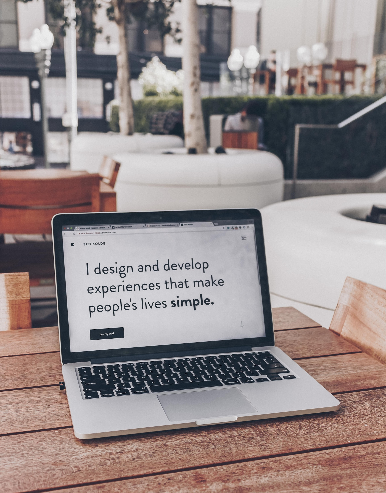

Como desarrollador web, mi día a día está lleno de creatividad y desafíos técnicos emocionantes. Desde el momento en que me siento frente a mi computadora por la mañana, sé que estaré inmerso en un mundo de código y diseño que da vida a sitios web sorprendentes.
Una de mis tareas habituales es trabajar en el front-end, donde traduzco diseños y conceptos en código HTML, CSS y JavaScript. Me aseguro de que los elementos de la página se vean y funcionen perfectamente en todos los dispositivos, desde teléfonos móviles hasta pantallas grandes de escritorio. La atención a los detalles es clave aquí, ya que pequeños ajustes pueden marcar una gran diferencia en la experiencia del usuario.

Pero mi trabajo no se limita solo a la parte visual. También colaboro con el equipo de back-end para conectar la interfaz de usuario con la lógica y la funcionalidad detrás de escena. Trabajo con bases de datos, APIs y servidores para asegurarme de que todo funcione sin problemas y de manera eficiente.
Un aspecto que realmente disfruto es la resolución de problemas. A veces, enfrento desafíos técnicos que requieren investigar, experimentar y encontrar soluciones creativas. Esto puede ser un proceso desafiante, pero es increíblemente gratificante cuando finalmente encuentro la solución y veo cómo todo encaja.
La colaboración es una parte esencial de mi trabajo. Ya sea interactuando con diseñadores para comprender su visión, o trabajando codo a codo con otros desarrolladores para integrar diferentes componentes, siempre estoy en constante comunicación.
Mantenerme actualizado con las últimas tecnologías es fundamental. La industria web avanza rápidamente, por lo que dedico tiempo a aprender nuevas bibliotecas, frameworks y herramientas que pueden mejorar mi eficiencia y la calidad de mi trabajo.